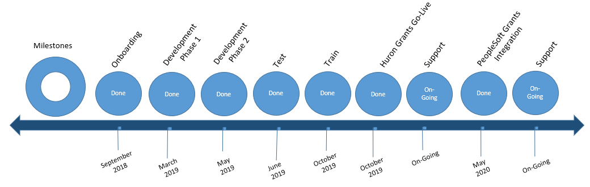

Project Overview
Project Wahoo Overview
Project Wahoo is a multi-year, multi-phased project focused on restructuring Research Administration. The goals of the project include redefining business practices, policies and procedures supporting research administration across UCF based on industry standards and best practices. An accompanying technology modernization will provide opportunities to streamline processes, gain new efficiencies and automate productivity.
Phase 2 Timeline

Phase 1 Scope
- Organizational readiness assessment
- Business process alignment
Phase 2 Scope
- eRA system implementation – Huron Research Suite
- PeopleSoft Grants module implementation
- Huron Grants & PeopleSoft Grants Integration
- Change Management
- Training
Grants Project
Grants Timeline
Important Information
-
What is it?
Huron Grants is a comprehensive solution for proposal submission and award management. The system ensures successful proposal creation and budget development, electronic submission to Grants.gov, and post-award management capabilities including award setup, modification entry, and budget reconciliation to enter and track sponsor approved budgets.
-
Why is it important?
Migrating from ARGIS to Huron Grants will provide ease of use for principle investigators (PIs), reviewers, and the Office of Research to complete actions within the system. The reports and metrics from Huron Grants are more advanced and will provide better insight into submission details. Improvements to routing and business processes will make contract submissions more efficient.
-
When will it be implemented?
Huron Grants was successfully implemented on October 21, 2019.
IRB Project
IRB Project Timeline
Important Information
-
What is it?
The Institutional Review Board (IRB) is established to protect the rights and welfare of human subjects involved in UCF research activities being conducted under its authority. Huron IRB will replace the existing iRIS system.
-
Why is it important?
Migrating from iRIS to Huron IRB will provide ease of use for Principle Investigators, reviewers, IRB Staff, and IRB Committee Members to complete actions within the system. The reporting and metrics from Huron IRB are more advanced and will provide better insight into submission details. Improvements to routing, business processes, and committee review will make IRB submissions more efficient.
-
When will it be implemented?
Huron IRB was successfully released on December 21, 2018. The decision to implement the IRB module of the Huron Research Suite first was made based on the timing of the Common Rule regulation changes (set for January 2019), the scope of IRB, and the Huron upgrade schedule.
IRB FAQ
Temporary IRB Protocol Revisions in Response to Coronavirus
The unprecedented coronavirus (COVID-19) situation may necessitate some investigators to alter their research protocols in some way to minimize the spread of this virus. We understand this has IRB implications, so we are providing Temporary Protocol Revisions, procedures and guidance on when to notify the IRB.
-
Should I continue my protocol during the COVID-19 period?
This is an individual investigator decision, unless UCF places additional restrictions. Please take into account, any added risk to the subjects, in particular, those subjects that may be at heightened risk from this disease vs the true need to continue your research during this crisis. Please reference the CDC website (cdc.gov/coronavirus/2019-ncov/index.html).
-
What types of changes can I make to my protocol that do not require IRB approval?
In general, changes that:
- Are temporary in nature in order to limit subject exposure to the virus. This means that when this crisis is over, you will return to all pre-crisis procedures.
- Change on interaction methods, such as changes from face-to-face to over the phone or some other similar devices.
- Please remember that this change can only be implemented if it presents no greater risk to participants. For example, if your study was taking place in person to avoid the risk by direct observations of the research subjects, a change to over the phone would not be permitted without a formal review by the IRB in the form of a modification.
- Do not add any additional risk to any subjects or study staff
- You should make a note in your study records regarding the above mentioned minor temporary change(s) that were made along with the justification in case you are ever audited
-
What type of changes “must” be approved by the IRB prior to implementing them?
In general, changes that:
- Are not being made as a direct result of the COVID-19 crisis, no matter how minor.
- Are greater-than-minimal risk changes that are a result of the COVID 19 crisis.
- Are on the protocol that is a greater-than-minimal risk study.
-
What if the greater-than-minimal risk revision can’t wait for IRB approval?
If it is in the best interest of the subject, and will minimize or prevent transmission of COVID 19, then make the change, however:
- You should immediately notify the IRB by email at IRB@ucf.edu.
- You should make a note the change(s) in your study records with the justification.
- You must submit the revision of protocol with the change(s) to the IRB as soon as possible, noting that the revision was implemented because of an emergency, including the justification for that emergent change(s).
-
What if there is a desire or need to keep a temporary COVID-19-related change a permanent change?
- If the change is consistent with item #2 above, then initiate the change and submit the revision.
- When you submit the revision, please include in the description of the revision that the change was already implemented, and the reason it was implemented “emergently”.
-
What if you decide to suspend your study until the COVID-19 crisis is over?
There is no need to inform the IRB. However,
- If your study is a greater-than-minimal risk study that involves some type of patient care, you must ensure your suspension does not increase any risk to those study subjects.
- If possible, make sure you contact any study subject who will be affected by this suspension (ie a study visit will be cancelled, etc.)
- You should make a note in your study records of this temporary suspension along with the justification and any actions taken in case you are ever audited.
-
Who can submit the proposal to IRB?
Study team members may create a study, however only the PI has the ability to “Submit” the study to the IRB in the system. Please note that after completing the IRB SmartForm (study application), you have the opportunity to complete other actions on the study, such as adding an Ancillary Reviewer, adding members to the Guest List, and revising answers on the SmartForm. The final step is to “Submit” the study to the IRB Office, which is completed by using the “Submit” activity found on the left-hand side of the Workspace, under “Next Steps”. Once the study has been submitted to the IRB Office, the state (status) will be updated from “Pre-Submission” to “Pre-Review”.
-
What was done with Active Expedited and Full Board Studies Previously Approved in iRIS?
A shell of each study was created in Huron IRB, with minimal information. When submitting either a Continuing Review or Modification, all first time Huron submissions will require study documents, either those previously approved in iRIS as- is or with updates to reflect a new modification request, uploaded in Huron. In addition, verification of the study team member needs to be completed by answering the yes/no questions regarding financial conflict of interest and study role. Please review the attached UCF Huron IRB Quick Reference Guide on "How to Submit a Modification or Continuing Review Request" found in the Help Center in Huron IRB (IRB > Help Center). Please note this guide has been updated to provide additional information based on feedback from the Research Community. Refer to this guide prior to starting your first modification or continuing review. Specific steps must be followed during the first time you log in to the study. If these steps are not followed correctly, there is no way to edit the submission and researchers will be asked to discard the submission and start over.
-
What was done with Active Exempt Studies Previously Approved in iRIS?
These studies were not carried over to the Huron system and will remain active in iRIS, unless a change is made to the study. If a modification is needed, a new study submission must be submitted in Huron using the new exempt study templates labeled "Request for Exempt Determination and Explanation of Research". These documents can be found in the Huron system under IRB> Library> Templates. Once an exempt study has been completed in Huron IRB, modifications can be made to that study with the same modification process used for Expedited studies.
-
Where can I find more resources?
A comprehensive list of Quick Reference Guides and how-to videos can be found in the Huron system under IRB > Help Center. If you have questions about how to use the Huron software, you may find the Help Center a very useful starting point.
-
What should I do to report a study with multiple research locations?
Studies involving one PI should be created as a "Single-Site" study in huron IRB, even if there are multiple research locations. Please see the Huron IRB Quick Reference Guide "How to Create a Single Site Study" for additional information (IRB > Help Center).
-
How should I report a Faculty Advisor?
Previously Faculty Advisors were to be listed on the last smart form page “” within the Huron IRB system, however based on feedback from the Research Community, this process has been revised. Going forward, Faculty Advisors should be listed as a team member with the role of “Faculty Advisor” on the Study Team Members page of the SmartForm (study application) in Huron IRB. This allows for Faculty Advisors to review study documents prior to final submission to the IRB Office. Because of this, the existing Faculty Advisor question was removed from the last page of the SmartForm. However, the Faculty Advisor checklist submission remains on the last page. For studies still in the “Pre-Submission” state (indicating they have not been submitted to the IRB Office), please update the Study Team Members page of the SmartForm. For any studies in review with the IRB Office but have not yet been approved, the IRB Office will send the study back so that you can update the Study Team Members page of the SmartForm. For any study that has been approved by the IRB Office, Faculty Advisors should be added to the Study Team Members page of the SmartForm the next time a MOD/Addendum is needed.
-
How long will I have access to iRIS?
iRIS will be in “read-only” mode at the end of February 2019. You will have access to the information for up to a year. iRIS will be taken offline in the first quarter of 2020. The IRB Office and GRIT want to thank you for your patience and understanding as we are learning the new system. If there are any questions, please contact the IRB office at irb@ucf.edu. Any technical issues should be reported to gritservicedesk@ucf.edu.
Agreements Project
Agreement Timeline
Important Information
-
What is it?
Huron Agreements provides management of financial and non-financial research agreements.
-
Why is it important?
Migrating from CobbleStone to Huron Agreements will provide ease of use for principle investigators (PIs), reviewers, and Contract Managers to complete actions within the system. The reports and metrics from Huron Agreements are more advanced and will provide better insight into submission details. Improvements to routing and business processes will make contract submissions more efficient.
-
When will it be implemented?
Non-Financial Agreements in Huron were successfully released on June 17, 2019 and financial agreements were successfully released on October 21, 2019.
IACUC Project
IACUC Timeline
Important Information
-
What is it?
Huron IACUC facilitates high-quality, compliant reviews for research studies involving the care or use of animals. The system provides access to species, procedures, substances, training information and inspections to facilitate the submission and review process.
-
Why is it important?
Huron IACUC will be the first online program that UCF IACUC and the Office of Animal Welfare (OAW) will use to review research protocols involving animals. Huron IACUC allows researchers to create and update teams, substances, and procedures that will be able to be used across multiple protocols. Researchers will be able to submit protocols, update animal counts, and update animal information for the OAW to review
-
When will it be implemented?
Huron IACUC was successfully released on September 23, 2019.
Safety Project
Safety Timeline

Important Information
-
What is it?
Huron Safety is a comprehensive solution that supports the Institutional Biosafety Office and Committee. It supports the submission of safety protocols, thorough review cycles, the ability to carry out continuing reviews, a complete amendment process, a full suite of reports, and integration with other solutions in the Huron Research Suite.
-
Why is it important?
Huron Safety will be the first online program that the Institutional Biosafety Office in the UCF Environmental Health and Safety Office will use to review, track and report on research safety protocols.
-
When will it be implemented?
Huron Safety was successfully released on February 28, 2022.
Conflict of Interest (COI) Project
COI Timeline

Important Information
-
What is it?
Huron COI is Huron’s software management system for disclosure of outside activities, financial interests, and potential conflicts.
-
Why is it important?
UCF will migrate from ARGIS to Huron COI to provide a centralized place for faculty, executive service, postdoctoral employees, individuals in positions of trust, and employees engaged in the design, conduct, and reporting of research at UCF to submit their UCF Potential Outside Activity, Employment, and Conflict of Interest and Commitment Disclosure (AA-21).
The reports and features within Huron COI are more advanced than ARGIS and will provide better insight into the reporting details. The Huron COI system also integrates annual disclosure data with related research certifications to ensure transparency and document researcher compliance.
Improvements to routing and business processes will make AA-21 submissions more efficient for both disclosers and reviewers.
-
When will it be implemented?
Huron COI was successfully released on October 31, 2022.